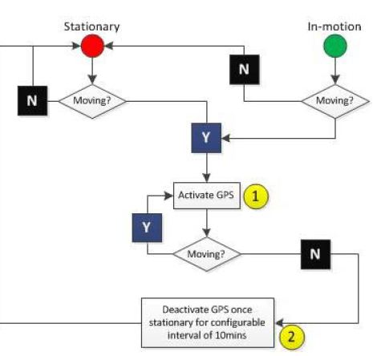
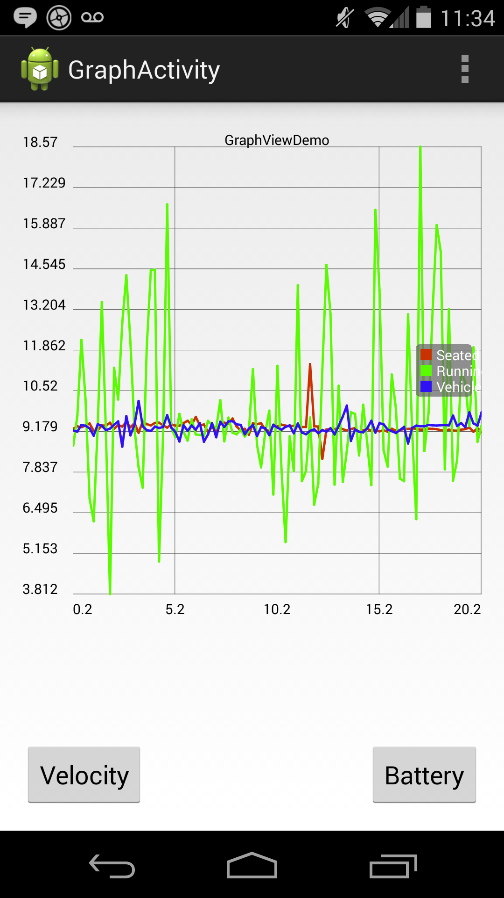

There are three ways to track a user movement in Android which are GPS, Cellular network, and Wifi. Among these three technologies, GPS is the most popular way to track. It is also the most battery consumed one. Every time the GPS chip trying to lock user location with the satellite, it will cost the phone a good amount of battery. If our phone continuously communicates with the satellite, it will run out of battery very quick. Therefore Accelerometer in our phone will help us to determine what kind of activities our users are doing in order to trigger the GPS at the right time and save battery. According to Oshin, Poslad, and Ma from Queen Mary University of London, we can determine the kind of activity we are in by looking at the magnitude of the Accelerometer velocity
Accelerometer provide us the three coordinate x, y and z which are the 3 linear acceleration along these 3 axises. Their units are all m/s^2. But these acceleration had gravity accleration in it also.
The use of the velocity data is very straight forward. If the velocity we found from the phone is within the range of "in-motion" activity, we should trigger our GPS to track the location. The flow-chart below is the basic ideas for a tracking algorithm that use accelerometer data.
The flowchart is from "Improving the Energy-Efficiency of GPS based Location Sensing Smartphone Applications" by Thomas Olutoyin Oshin, Stefan Poslad, adn Athen Ma from School of Electronic Engineering & Computer Science
We did our own research that is similar to verify Oshin, Poslad, and Ma paper .
In our android application, we use the sensorManager API that is provided through Android library to get the reading for x, y, and z. Then we use the formula above to calculate the velocity.
We have three activities which are seated(at-rest), running, and vehicle(in-car motion). After collect the velocity for each activity, we created a simple graph to compare the velocity magnitude of these three activities.
The result came out very similar to the research on the paper.
